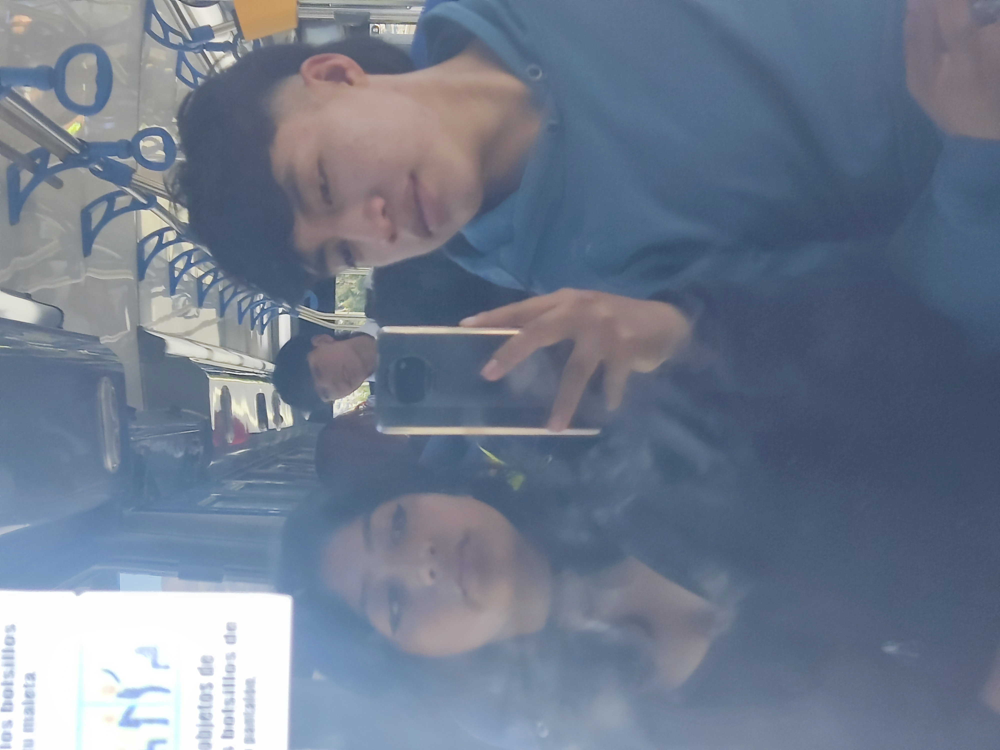
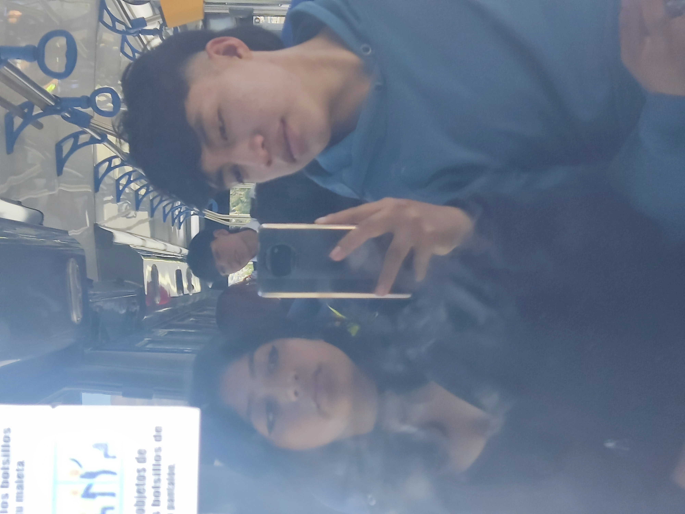
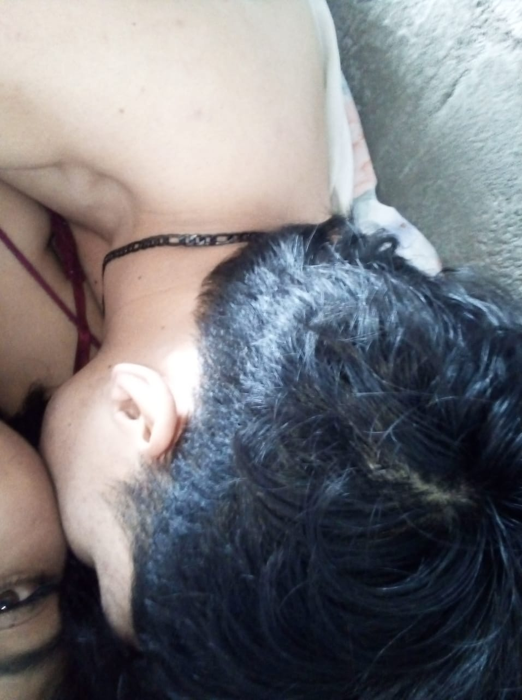
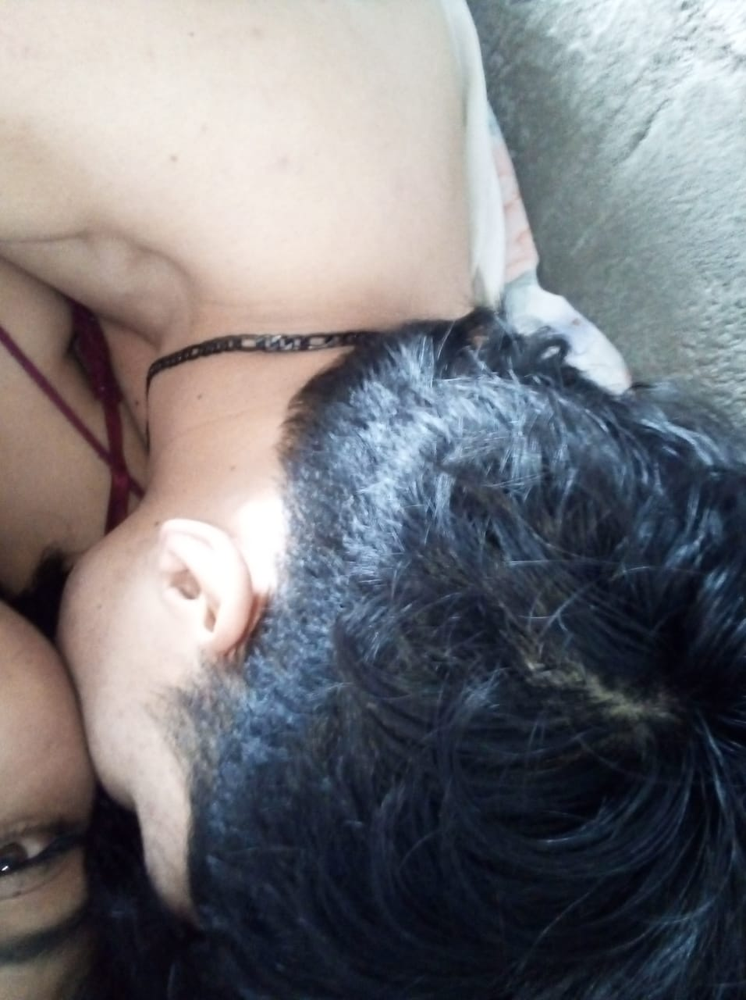
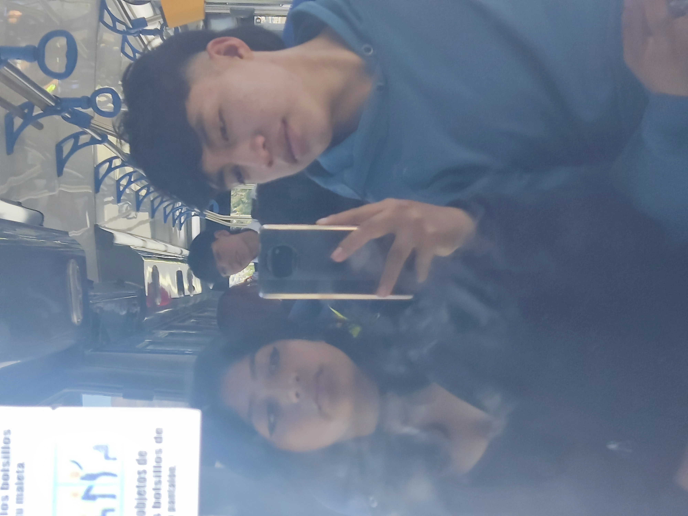
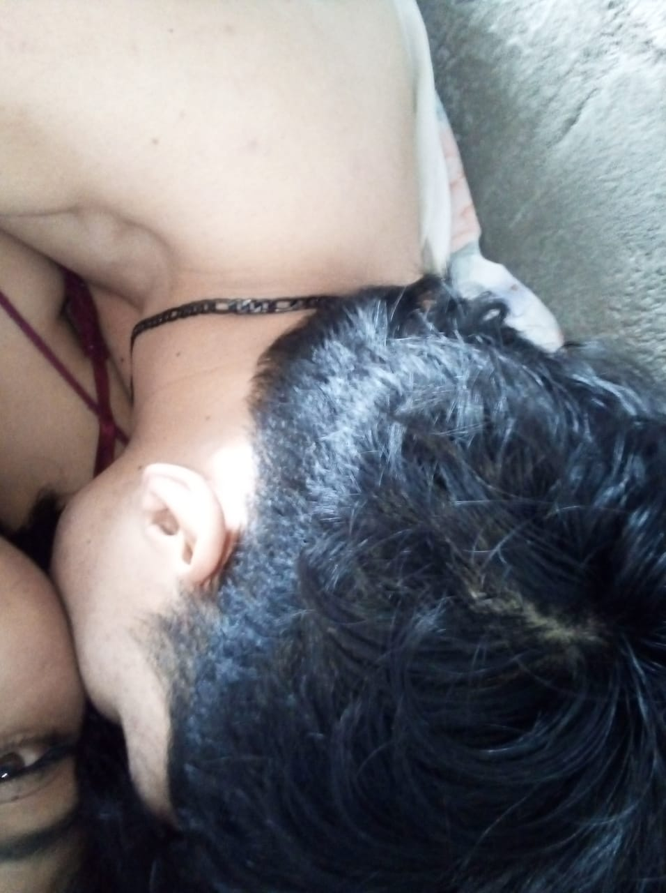
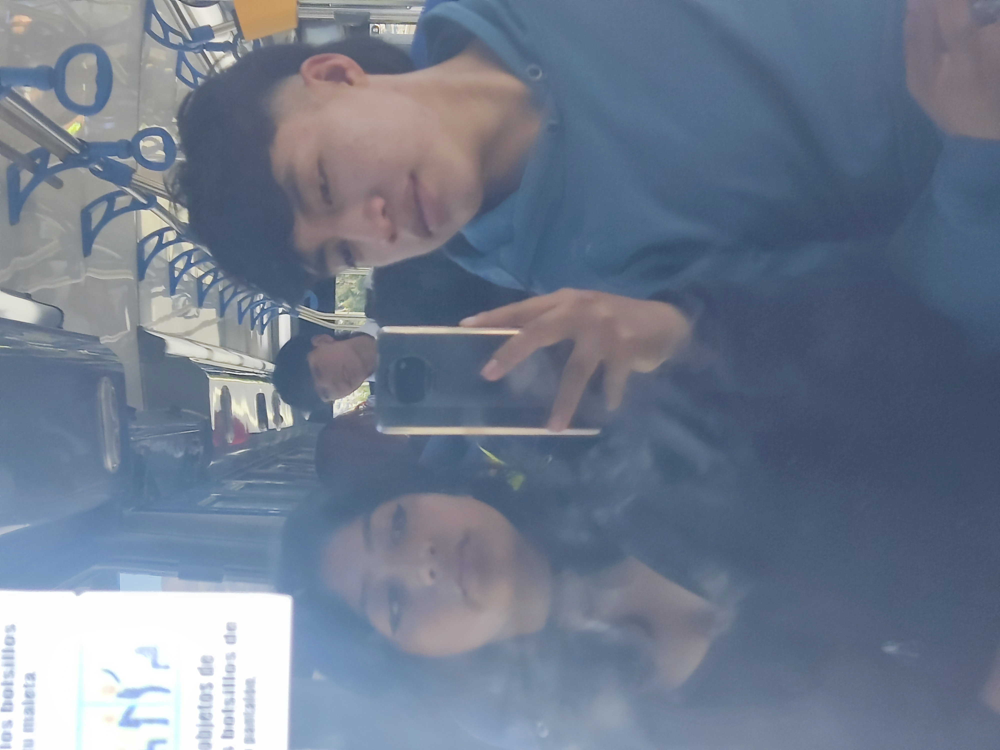
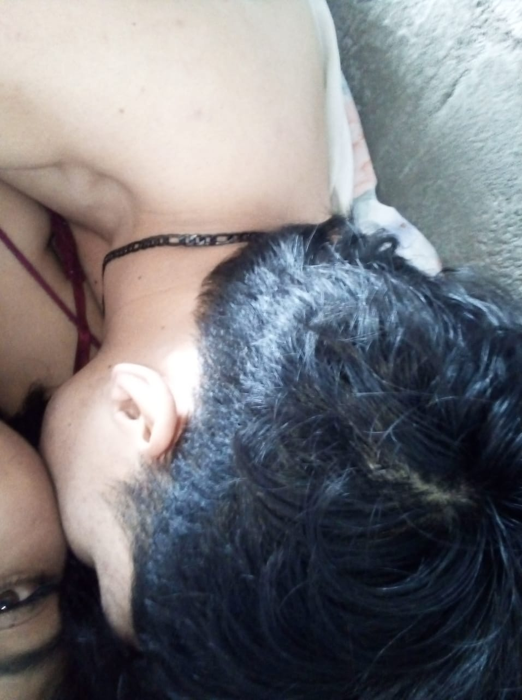

 



 



Mi amor por ti no nació de la costumbre, nació del corazón, nació de cada momento que compartimos sin darnos cuenta del tiempo. Nació cuando, poco a poco, entraste en mi vida y sin notarlo te fuiste quedando en mi corazón. Nació con tus ocurrencias que siempre logran sacarme una sonrisa, con tus cariños que me hacen sentir querido, con tu increíble forma de ser conmigo, y con esa manera tan única y hermosa que tienes de amar. Nació en los detalles pequeños, en las conversaciones sinceras que compartimos juntos, en los silencios compartidos y en la tranquilidad que siento cuando estás cerca. Porque amarte no fue una decisión, fue algo que simplemente pasó y que hoy sigo sintiendo con la misma intensidad y con todo el amor que guardo para ti.
TE AMO MÁS QUE A NADA. Mi bella mujer.